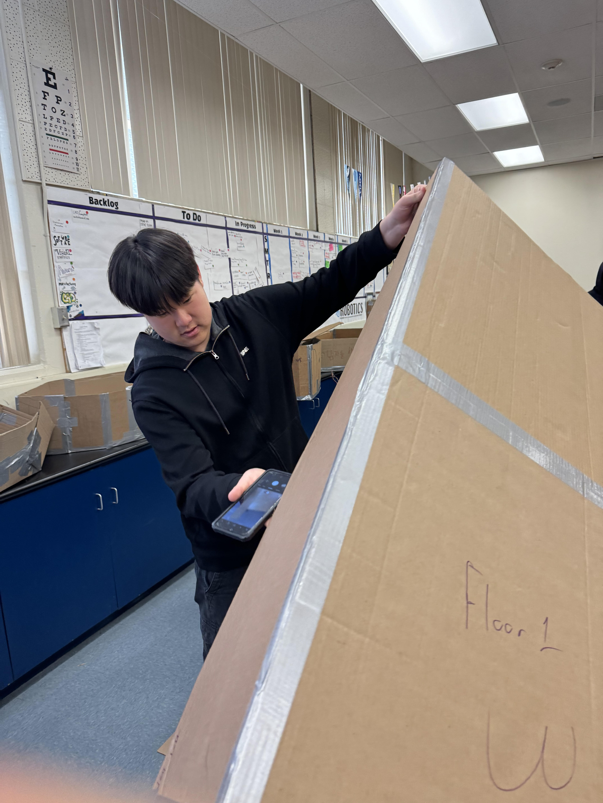

1/19/24 - This is my first journal of second semester. This week, we learned about chemical engineering and what they do. In short, they basically deal with all chemistry and molecular bonds for products. We also started a new project to create a car to do a certain task that we come up with. Me and my partner decided that we will replicate the MOOSE test which is a safety test for cars that determine if they can go around a moose without sliding or flipping over. We plan to put the battery on the bottom to keep the center of gravity low while putting the PCB above seperated by a piece of cardboard and wrap the entire underside plus wheels with a custom chassis made out of cardboard as just having some wheels with wire + motor + PCB + battery will not be the prettiest.
1/26/24 - This week we started a project. This project consists of using an arduino and creating a car that will do a specific task that was defined by us. For our project, we are designing our car around the MOOSE test. Currently, we have created a CAD design that we are both in agreement (my teammate) and are finishing up the electronic CAD design.
1/26/24 - Next week, we hope we can finish the electronic portion. By tuesday we hope that we can start designing a prototype with cardboard. We are still in designing phase for the MOOSE test itself.
2/5/24 - Last week, we finished CADing and started the development of our chassis alongside the electronics. This week, our goal is to wire everything and atleast get a rolling chassis. We hope that by Friday that we can get that rolling chassis and finish the tinkering of the ARDUINO code. This weekend, I am not planning on doing anything. Rather, I'm going to do my Comp Sci HW.
2/13/24 - This week, we finished our second prototype for chassis. We additionally got our wiring and coding mainly finished and are going to start the design of the chassis. This week, we will be, in addition to the chassis design, creating points to lessen the friction between motor and the chassis.
2/26/24
1. Our final product was a tank with a turret ontop and two motors driving the car from the center. Additionally, there were wheels infront and behind the motors. In the final testing day, our car did alright. Our plan was for it to go around in circles and drive forward. However, the cars alignment was off and kept straying to the right and then turning left with the circle code.
2. We could not measure our first prototype as the body fell apart as the walls were made as hinges. Our second car was not measured but went fairly far compared to the other cars in the competition.
3. Between our two cars, our second car did better. Our first car only featured two wheels in the back acting as rear-wheel drive like an actual car. Our second car was built with six wheels with two wheels attached to a motor within the middle. Our second car did better as the body did not fall apart when testing.
4. If I were to make a third car, I would base it more upon a SUV and try to make the alignment straighter. Personally, I learned that working with cardboard requires careful planning and not a rushed job. Additionally, I learned that with little mass, the resistance is not that much when just using power to turn rather than steering to turn. ALSO, I learned that a hinge should not
be made from cardboard as opening it 10 times made it worn out and deformed the car shape as the walls were hinges to open the body to access the electronics.
3/4/24
1. Our project currently is to design a "machine" to prevent an egg from breaking after dropping from the third story of the 1000 building next to Mr. Poole's Comp Sci room. Currently, our team has a design of firstly cushioning the egg within a pyramid box. We will attach two balloons to the side and use the two trash bags we're provided as another two balloons. We believe the egg will not shatter as we will also have a parachute with the pyramid to make sure the box has cushioning and to slow the box down.
I'm personally scared of the parachute failing and our box just tumbling down after being tangled in the parachute. The weakest part of the design is most likely the seams as we will not have much tape as we are only provided with three feet.
3/13/24
1. Our egg drop project consisted of a pyramid ontop of a 8x8 cardboard sheet. The pyramid contained our egg with cotton balls surrounding it. The flat sheet also had a trash bag acting as a parachute with 8 inch long strings attaching it. We also had balloons on the bottom. When we dropped it from the third floor, our egg did not shatter surprisingly or leak even though its name was BMW. However, our egg had a slight crack at the top as we opened the pyramid to inspect the egg and dropped it on the concrete.
2. During my spring break, I might go to Hawaii or Las Vegas. Nothin much yk.
3/29/24
1. This week we started a new project. This projects goal is to create a boat to float down a gutter full of water as fast as possible. Our team is making a boat with a rubber band propelled motor. We are expecting it to be faster than an electrical motor and that it will be stable.
2. My favorite part of Spring break was going to Vegas. This is b/c I got to see cars that I usually don't see around our area in La Crescenta.
3. I'm trying to clutch up in school cuz it ain't looking too good with all Bs right now.
1. For the last two weeks, we started a new project. This project consisted of getting a makeshift boat down a raft as far and fast as possible.
2. Our boat did not do well. Our boat captured water through the front and then the propeller motor stopped working. Additionally, because of this extra weight, the boat fell over and got stuck because of its sail. We could have sealed the front with tape and removed the sail to remove the extra weight inbalance.
5. My favorite part of this class was honestly the people. Mr. Poole, my table mates, and the tables around. Overall, this class has been just amazing with everyone helping eachother overcome challenges and work presented by Mr. Poole, our teacher.
6. This upcoming weekend, I plan to do some CSF stuff on Saturday and then just relax and do some Comp Sci work. :)
4/15/24
1. This week we started the final project of the year. We have to build a boat to carry two people across the CV swimming pool. I'm excited to see people fall into the pool.
2. Last week, our challenge was to make a bridge as long as possible with only sticky notes. Me and my teammate took the twenty allocated sticky notes and cut them and stringed them together.
5. Honestly, senioritis has hit early for me. I'm just looking forward to getting out of school, finishing AP exams, finalizing college applications, and getting my own car. :')
4/26/24
1. For the last two weeks, we've been doing our boat project. Our progress has been mainly cutting the body of the boat where our two rowing members will be sitting and taping some parts together.
2. In all honesty, I believe there will be complications in our boyancy formulas and how much the boat will float as I'm not fully sure if we did the math correctly and that the boat will go down 6 inches.
3. I'm just excited to keep working on the boat and excited to see what other challenges there will be.
5. A stereotype that I think I tend to be placed into is that I'm bad at driving just b/c I'm asian. I want to overcome this by showing people that I can drive just as anyone else.
5/6/24
1. Last week, we continued our project boat. Our boat is mostly done with the walls being completed alongside the floor with the main hull also being taped on. Our boat resembles a F-16 fighter jet right now b/c the front hull is missing so there is just a empty hull taking on air.

3. This week, we will complete the front of the hull. Additionally, we will probably finish our team flag and the paddles to row the boat.
4. I'm concerned about the seals and the floor. Our tape has minor imperfections that are holding in air and we might need to use all of our remaining tape just to seal certain parts completely. Also the floor is two pieces that are being held up by the hull and the supporting beams on the hull. I don't want the hull being punctured mid-way through the pool and for it to take on water.
5. ABSOLUTELY ORANGE JUICE THE HELL? LIKE APPLE JUICE IS NOT IT JIT. ORANGE JUICE IS MAD GOOD FOR BREAKFAST YK. LIKE APPLE JUICE? YOU MEAN TRASH JUICE!!
1. We are finished with the boat and are preparing the paddles now.
2. We just need to finish paddles and we are done.
4. I went out with my family for mother's day.
5/20/24
1. Last week, we finished our boat for the first half of the week. Our paddles are in absolute dismantle but the boat itself is very bing chilling. We started on a new project demo trial for the next years classes of architecting the school buildings.
2. This week, we are going to work on making a 1:10 scale of the 5000 building.
3. a. In this course, we learned about the different types of engineering alongside being able to do those projects first hand.
b. I really liked the atmosphere of this class and how everyone worked together as a team with our teacher, Mr. Poole, supporting us.
c. I would probably change how much resources are actually given out as I've seen a lot of cardboard, glue, tape, etc. being wasted as there is an abundance of them.
d. I'd probably like to see less of resource waste as talked about previously.
4. This summer, I plan to work to get that mullah and some extra curricular stuff on my college applications. Speaking of that, I will do my college application essays to UCs.
5. My finals have been rough. Although I only have one actual test for math, my other classes have ALL assigned projects. Comp Sci, APES, Korean, and Psychology have assigned projects to do with them all being due on the same day of 5/29 except Comp Sci.
6. Thank you for being an awesome teacher this year. I really enjoyed Comp Sci even though I sucked at it for the first half of the course. This course was equally fun with building stuff after a hard day of AP classes. Thank you, you made the highlight of my Junior year.


.jpg)